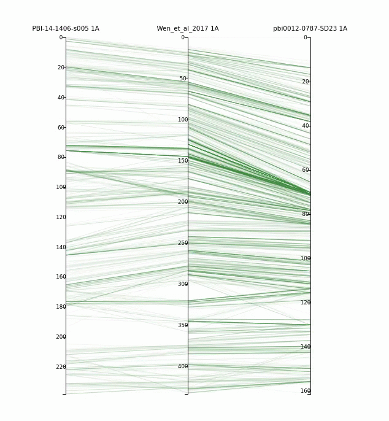

Pretzel Wheat Pretzel Wheat
An interactive, web-based environment for navigating multi-dimensional
wheat datasets, including genetic maps and chromosome-scale physical
assemblies.
August 8th 2018 - Pretzel Wheat Version 1.0 released
Pre-loaded with the recently-released International
Wheat Genome
Sequencing Consortium (IWGSC) RefSeq v1.0 Chinese Spring assembly
and
other content of interest to wheat researchers, including:
- Infinium 90k SNP chip marker locations
- DArT marker locations
- 15 90k genetic maps generated by Agriculture Victoria
- Genome data for five related species including wild emmer
wheat and rice
Users can explore the above datasets as well as upload their own
content.
Try it now
You can demo 3 publicly available genetic maps in Pretzel here.
|